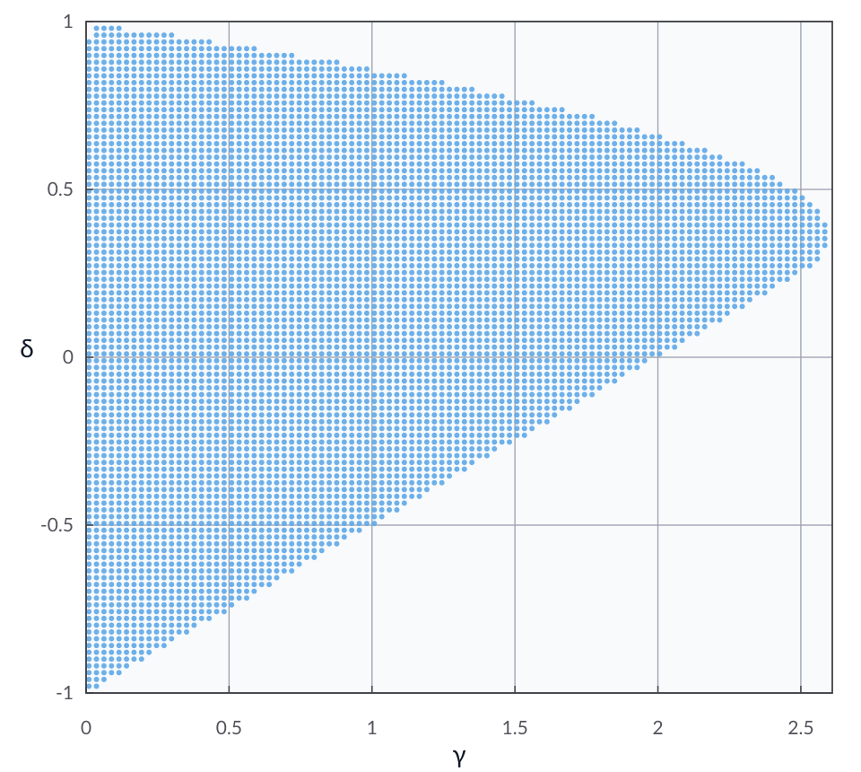

The heavy-ball method: Smooth and convex
Problem setup
Consider the unconstrained minimization problem
where \(f : \calH \to \reals\) is convex and \(L\)-smooth with \(L>0\).
For initial points \(x^{-1}, x^0 \in \calH\), momentum \(\delta \in \reals\), and step size \(\gamma \in \reals_{++}\), the heavy-ball update [Pol64] is
In this example, we search for a feasible Lyapunov certificate with \(\rho=1\) and condition (C4) enabled such that
where \(x^\star \in \Argmin_{x \in \calH} f(x)\).
Model the problem in AutoLyap and certify sublinear convergence
\(f\) is modeled by
SmoothConvex.The optimization problem is represented by
InclusionProblem.The update rule is represented by
HeavyBallMethod.Sublinear function-value parameters are obtained with
IterationIndependent.SublinearConvergence.get_parameters_function_value_suboptimality.Feasibility at fixed \(\rho=1\) is checked with
IterationIndependent.search_lyapunovandremove_C4=False.
Run the iteration-independent analysis
This example uses the MOSEK Fusion backend (backend="mosek_fusion").
Install the optional MOSEK dependency first:
pip install "autolyap[mosek]"
from autolyap import IterationIndependent, SolverOptions
from autolyap.algorithms import HeavyBallMethod
from autolyap.problemclass import InclusionProblem, SmoothConvex
L = 1.0
gamma = 1.0
delta = 0.5
problem = InclusionProblem([SmoothConvex(L)])
algorithm = HeavyBallMethod(gamma=gamma, delta=delta)
MOSEK_PARAMS = {
"intpntCoTolPfeas": 1e-6,
"intpntCoTolDfeas": 1e-6,
"intpntCoTolRelGap": 1e-6,
"intpntMaxIterations": 10000,
}
solver_options = SolverOptions(
backend="mosek_fusion",
mosek_params=MOSEK_PARAMS,
)
# License-free option:
# solver_options = SolverOptions(backend="cvxpy", cvxpy_solver="CLARABEL")
# Build V(P, p, k) and R(T, t, k) for function-value suboptimality.
P, p, T, t = IterationIndependent.SublinearConvergence.get_parameters_function_value_suboptimality(
algorithm,
tau=0,
)
result = IterationIndependent.search_lyapunov(
problem,
algorithm,
P,
T,
p=p,
t=t,
rho=1.0,
remove_C4=False,
solver_options=solver_options,
)
if result["status"] != "feasible":
raise RuntimeError("No feasible Lyapunov certificate for this (gamma, delta) pair.")
print("Feasible certificate found with C4 enabled.")
What to inspect in result:
result["status"]:feasible,infeasible, ornot_solved.result["solve_status"]: raw backend status.result["rho"]: the fixed contraction parameter (1.0in this sublinear setup).result["certificate"]: Lyapunov certificate matrices/scalars.
When the certificate is feasible, the certified function-value convergence is
where \(x^\star \in \Argmin_{x \in \calH} f(x)\).
Equivalently,
Sweeping over 100 values of \(\gamma\) on \((0,2.61]\) and 100 values of \(\delta\) on \([-1,1]\) with \(L=1\) gives the plot below, where each blue dot denotes a parameter pair with a feasible certificate.
{kind=link}

References
B. T. Polyak. Some methods of speeding up the convergence of iteration methods. USSR Computational Mathematics and Mathematical Physics, 4(5):1–17, 1964. doi:10.1016/0041-5553(64)90137-5.